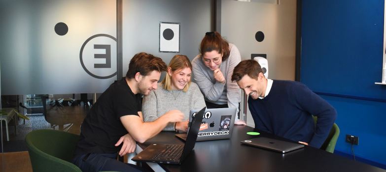

Центр громадської аналітики «Вежа» - громадська неприбуткова платформа, метою якої є підготовка та висвітлення аналітичних матеріалів усіх, хто має хист та бажання давати оцінку поточним подіям в галузі політики, економіки, права, судової та правоохоронної системи, культури, спорту, туризму та довкілля, міжнародних відносин та соціальних питань, трудових відносин, психології etc. шляхом підготовки публіцистичних матеріалів у форматі блогів, прогнозів, міркувань…
Аби стати учасником Центру достатньо зареєструватися та надіслати ваш матеріал на адресу editor@vezha.com.ua
У разі схвалення він буде опублікований тут, на сайті Центру з відповідним анонсом в Телеграмканалі (50+ тисяч підписників).
3 (три) кращі публікації щотижня за вибором Центру будуть взяті за основу для підготовки відео за участі автора матеріалу для Ютубканалу Клочок TIME
Вимоги до матеріалу: достовірність фактів, відсутність абсцентної лексики, закликів до насильства чи повалення державного ладу. Центр не несе відповідальності за зміст опублікованих повідомлень інформаційних агентств та реклами і може публікувати статті, не поділяючи точку зору автора.
Члени ЦГА “ВЕЖА”